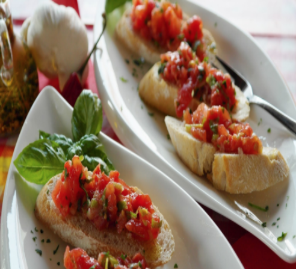

The Cooking Ranch
About
Recipes
Contact
Log-In
Farm To Table Fresh
Grilled Veggie Skewers
Vegetable skewers are the summer version of oven-roasted vegetables. You can mix and match your favorite ones, spice or marinade them and cook them on a gas grill or in the oven or on the stovetop. Here is our favorite combination!
Bruschetta with Tomato
Ah bruschetta, one of the best ways to enjoy the bounty of summer. Pronounced "brusketta", this classic Italian appetizer is a perfect way to capture the flavors of garden ripened tomatoes, fresh basil, garlic, and olive oil. Think of it as summer on toast!

Crispy Pan Fried Panko Shrimp
Now here’s my kind of appetizer/party food! I love anything that’s got a perfectly golden brown crisp crust and dunked in some kind of delicious sauce. Here you get the tastiest, skillet seared, crispy panko crusted shrimp that’s seasoned with herbs and spices!
Crispy Fried Calamari
This fried calamari recipe is tender pieces of squid soaked in buttermilk, then coated in seasoned flour and deep fried to golden brown perfection. A quick and easy appetizer option that’s even better than what you’d get at a restaurant!